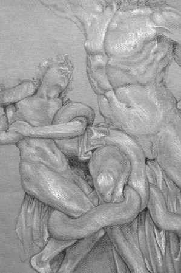
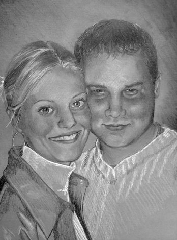
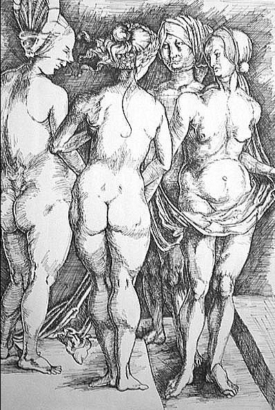

traditional
Medium: Oil Painting, 16x20. Client commission.

Medium: Pencil/graphite. Value study of Laocoön and His Sons.

Medium: Pencil/graphite. Client commission.

Medium: Permanent marker/ink pen. Crosshatch study of Dürer's Four Witches.
Medium: Oil paint. Self-portrait.